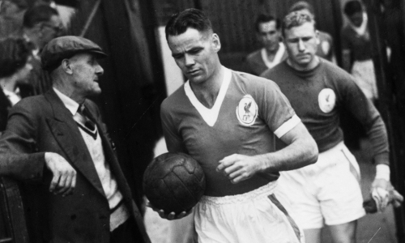
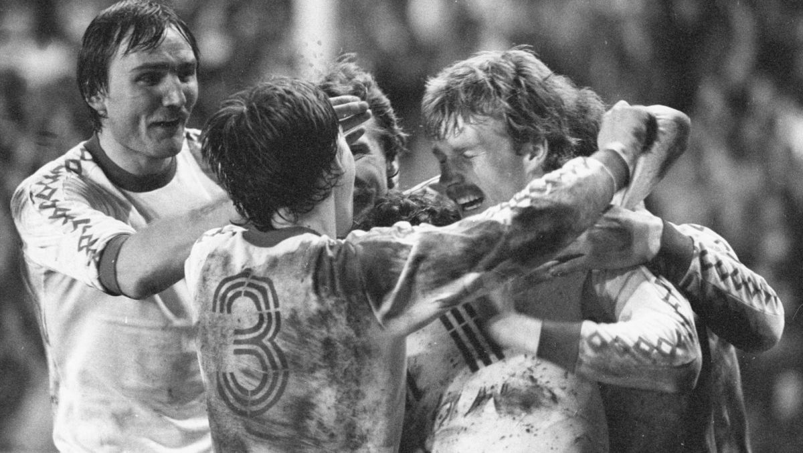

Liverpool Football Club mógłby się nigdy nie narodzić, gdyby nie jedna postać. W roku 1892 powstał spór o najem, w efekcie czego Everton opuścił Anfield, a prezes klubu John Houlding został wspólnie z garstką fanów i tylko trzema zawodnikami z pierwszego zespołu. Jednak był zdecydowany tworzyć historię piłki nożnej w mieście.

Utworzył więc od podstaw nowy klub, wybrał nazwę Liverpool... i stworzył legendę.
Nawet on sam nie mógł przewidzieć jak udany będzie jego plan. Po ponad 100 latach, żaden angielski klub nie może równać się z Liverpool FC pod względem osiągnięć - 18-krotni Mistrzowie Kraju, 6-krotni zwycięzcy FA Cup, 8-krotni zwycięzcy Pucharu Ligi, 5-krotni zdobywcy Pucharu Europy i 3-krotni zdobywcy Pucharu UEFA.
Po odnotowaniu tytułów klubu można prześledzić kwitnąca historię klubu, który dążył aż do najwyższego szczebla rozgrywek w kraju. Od walki we wczesnych latach do historycznej potrójnej korony w 2001 roku za Gerarda Houlliera.

Artykuł przypomni wspaniałe zwycięstwa i europejskie tryumfy oraz rozważy tragedię Heysel i Hillsborough.
Skupiliśmy się na 12 kluczowych okresach w historii Liverpool Football Club - największego klubu piłkarskiego wszechczasów w Anglii. To historia niewiarygodnej pasji i dumy - historia ta, inspiruje nie tylko fanów Liverpoolu, ale kibiców na całym świecie.
----->
Autor strony: Mateusz Kuchta